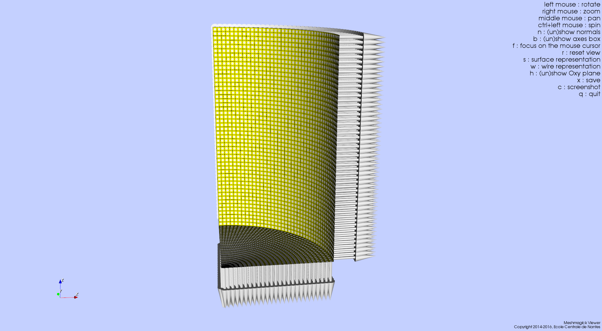
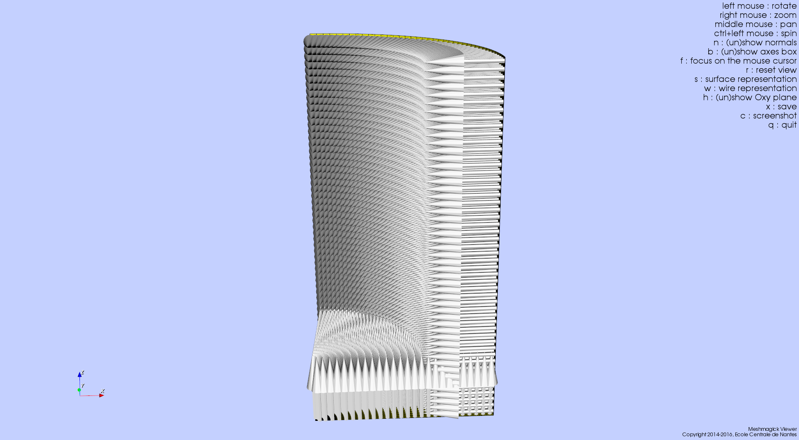
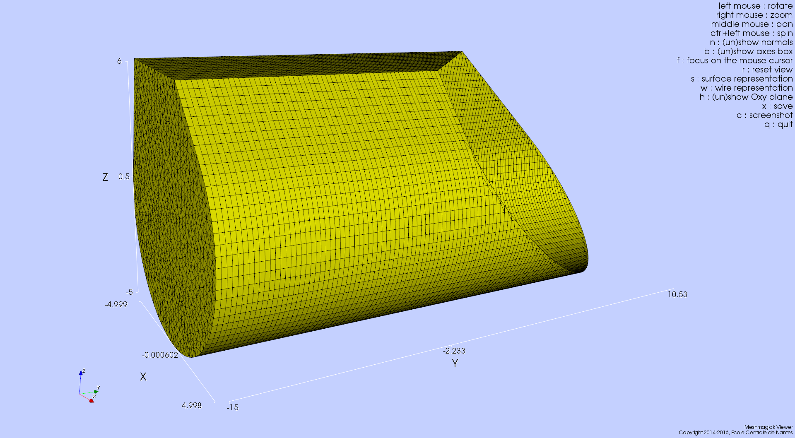
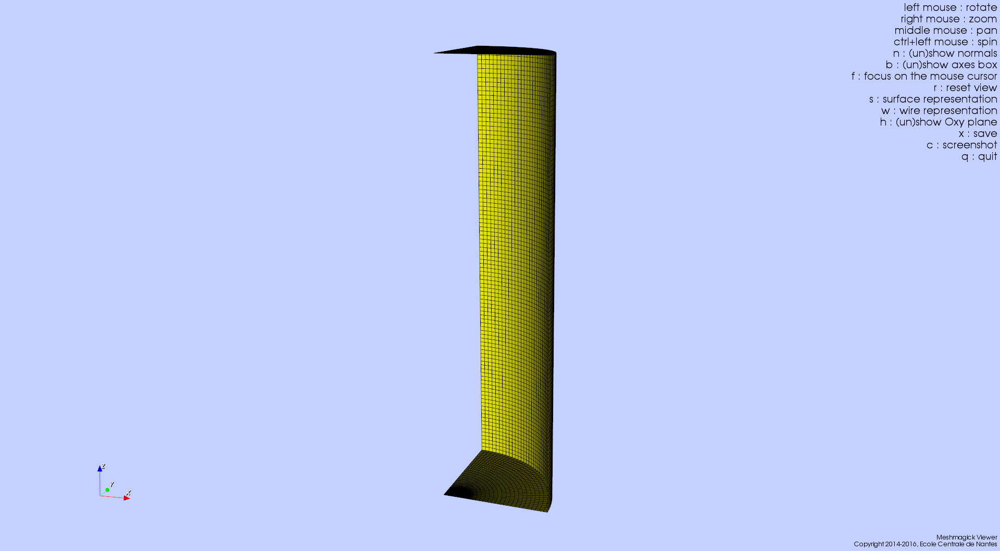
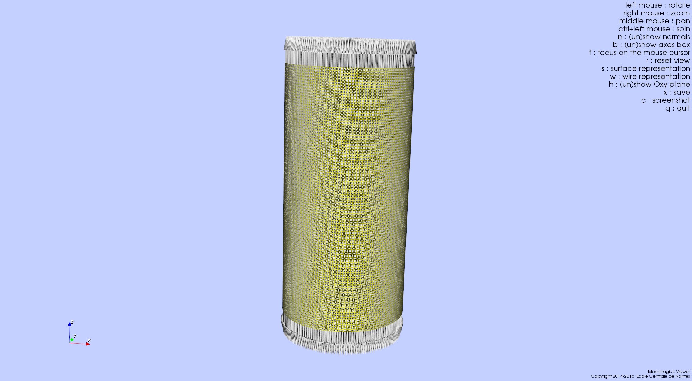
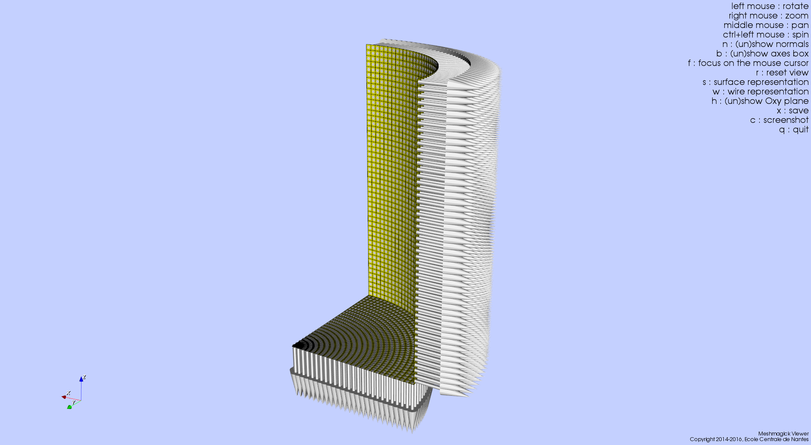

Using Meshmagick¶
Note
- Mesh files examples used through this page are available under the meshmagick/tests/data directory so that you can play with them.
- Images that illustrate the examples have been obtained with the Meshmagick’s viewer and by pressing the
ckeystroke. - Most of the command line options may be combined.
Content
Getting help¶
You can get command line help by issuing the following command:
>$ meshmagick -h
The output of this command is reproduced in the Command Line Interface Reference Guide.
Converting a mesh file¶
Converting a mesh file is one of the most basic usage of Meshmagick:
>$ meshmagick SEAREV.vtp -o SEAREV.mar
The format of the file is generally guessed from the extensions. However, sometimes the extension may not be explicit enough to guess the file format. You should then use the -ifmt and -ofmt options to explicitly declare the file format:
>$ meshmagick SEAREV.vtp -ifmt paraview SEAREV.vtp -ofmt nemoh SEAREV.dat
This way, we told Meshmagick that SEAREV.dat should be in the Nemoh input mesh file format.
Getting information on a mesh¶
Quick information¶
Quick information on a mesh is given by the -i option:
>$ meshmagick SEAREV.vtp -i
That gives us the following output:
=============================================
meshmagick - version 1.0
Copyright 2014-2016, Ecole Centrale de Nantes
=============================================
../meshmagick/tests/data/SEAREV.vtp successfully loaded
--------------------------------------------
MESH NAME : SEAREV
--------------------------------------------
Number of vertices: 14354
Number of faces: 15804
Number of triangles: 2904
Number of quadrangles: 12900
xmin = -4.999371 xmax = 4.998167
ymin = -15.000000 ymax = 15.000000
zmin = -5.000000 zmax = 6.000000
=============================================================
meshmagick - version 1.0
Copyright 2014-2016, Ecole Centrale de Nantes
Maintainer : Francois Rongere <Francois.Rongere@ec-nantes.fr>
Good Bye!
=============================================================
Mesh quality metrics¶
You can get some quality metrics on the mesh by issuing:
>$ meshmagick SEAREV.vtp --quality
that gives:
=============================================
meshmagick - version 1.0
Copyright 2014-2016, Ecole Centrale de Nantes
=============================================
../meshmagick/tests/data/SEAREV.vtp successfully loaded
Triangle quality of the mesh (2904 elements):
Area Ratio:
range: 0.0315238 - 0.104016
average: 0.060761 , standard deviation: 0.0129906
Edge Ratio:
range: 1.0115 - 1.68482
average: 1.28402 , standard deviation: 0.135239
Aspect Ratio:
range: 1.00504 - 1.78696
average: 1.17559 , standard deviation: 0.104713
Radius Ratio:
range: 1.0001 - 1.63074
average: 1.06858 , standard deviation: 0.0637777
Frobenius Norm:
range: 1.00009 - 1.4086
average: 1.0574 , standard deviation: 0.0487658
Minimal Angle:
range: 35.6524 - 59.4647
average: 48.5477 , standard deviation: 4.93326
Quadrilateral quality of the mesh (12900 elements):
Area Ratio:
range: 0.0774506 - 0.0812261
average: 0.0797408 , standard deviation: 0.00129459
Edge Ratio:
range: 1.93626 - 2.03065
average: 1.99352 , standard deviation: 0.0323648
Aspect Ratio:
range: 1.46813 - 1.51532
average: 1.49676 , standard deviation: 0.0161824
Radius Ratio:
range: 1.22636 - 1.26155
average: 1.24764 , standard deviation: 0.0120902
Average Frobenius Norm:
range: 1.22636 - 1.26155
average: 1.24764 , standard deviation: 0.0120902
Maximal Frobenius Norm:
range: 1.22636 - 1.26155
average: 1.24764 , standard deviation: 0.0120902
Minimal Angle:
range: 90 - 90
average: 90 , standard deviation: 0
Definition of the different quality measures is given
in the verdict library manual :
http://www.vtk.org/Wiki/images/6/6b/VerdictManual-revA.pdf
=============================================================
meshmagick - version 1.0
Copyright 2014-2016, Ecole Centrale de Nantes
Maintainer : Francois Rongere <Francois.Rongere@ec-nantes.fr>
Good Bye!
=============================================================
Note
This option requires that you have an installed version of the python VTK library as it is used to compute these metrics. It relies on the verdict library, initially developed at Sandia lab and late included into VTK. More information on the metrics can be seen in the Verdict manual.
Mesh file visualization¶
Quickly viewing a mesh can be achieved by using the following command:
>$ meshmagick SEAREV.vtp --show
that opens the internal Meshmagick’s viewer.

Note
The viewer relies on VTK, so the python VTK library must be installed in order to use it.
The viewer is blazing fast and support mesh manipulation with the mouse. Some keyboard keys are available and their usage is indicated in the upper right panel.
Certainly the most useful feature is teh visualization of normals by pressing the n keystroke so that you can verify
consistency of normals across the mesh as well as orientation (must generally be outward for computations).
The above screenshot has been obtained by pressing successively the keys n (showing normals), w (wire
representation), h (show Oxy plane i.e. the water free surface) and c (to save a screnshot that is saved
under the name screenshot.png in the current working directory.)
Just play with options to discover what is available !
Note
The frame at the lower left corner is draggable and resizable so that you can inspect your mesh for alignment or whatever you want.
Mesh healing¶
Meshmagick offers some options to deal with mesh description. Sometimes, meshes are produced with duplicated vertices description, making it impossible to establish some advanced conectivities. This is intrinsically the case for e.g. in GDF files, the input mesh file format of Wamit where faces are internally represented by vertices coordinates only, without using a connectivity table.
Sometimes also, faces normals are not consistent. This is often the case by e.g. when using gmsh mesh generator. You may also want to flip every normals.
Removing duplicate vertices¶
The -md option does this:
>$ meshmagick coque.gdf -md
that gives:
=============================================
meshmagick - version 1.0
Copyright 2014-2016, Ecole Centrale de Nantes
=============================================
../meshmagick/tests/data/coque.gdf successfully loaded
* Merging duplicate vertices that lie in an absolute proximity of 1.0E-08...
--> Initial number of vertices : 15100
--> Final number of vertices : 3911
--> 11189 vertices have been merged
=============================================================
meshmagick - version 1.0
Copyright 2014-2016, Ecole Centrale de Nantes
Maintainer : Francois Rongere <Francois.Rongere@ec-nantes.fr>
Good Bye!
=============================================================
This allows to generate connectivity tables in the mesh and may drastically reduce the mesh size in memory and on disk.
Healing normals¶
This is obtained by using the -hn command line option. Let’s have an example. In the
meshmagick/tests/data folder, you can find the file cylinder.geo that is a geometry file using the GMSH
language for modeling geometry. It models the eight of a cylinder.
If you have gmsh on your computer, you can generate a mesh file from this file by issuing the following command in your terminal:
>$ gmsh -2 cylinder.geo
It will generate a file named cylinder.msh which is a surface mesh of the portion of cylinder. One thing that you
can do is to visualize this mesh with the –show option:
>$ meshmagick cylinder.msh --show
and stroke n to watch normals.
It is clear that gmsh did not orient the normals consistently. Now, you can heal them by issuing by e.g.:
>$ meshmagick cylinder.msh -hn -o cylinder_healed.vtp --show
which heals the normals, opens the Meshmagick’s viewer and writes the healed mesh as a Paraview file.
Note
This option uses a flood fill algorithm to diffuse the normal orientation information. For doing so, it requires to establish a connectivity map for faces/faces adjacency. For this map to be realized, it is necessary to merge duplicate nodes before healing normals. When invoking the -md and -hn options at the same time, merging is done before healing so it is verified.
Warning
If your mesh is not conformal, this option may fail as the connectivity map used by the flooding algorithm may present some non connected patches of faces that will be flooded independently, making the transit of normal orientation between these patch impossible.
Note
If the mesh is closed and conformal, a side effect of this option is to test if the normals are outgoing and correct them if they are not. This is achieved by “plunging the mesh in water” and integrate the hydrostatics pressure to identify the resultant force orientation which must be along the positive vertical in case the normals are outgoing. If the mesh does not allow this checking, normals are nevertheless made consistent and you are warned about the eventual need to manually watch the normals from the Meshmagick’s viewer and issue a new command to flip the whole normals as described in the following.
Flipping normals¶
This can be done with the -fn option. Based on the cylinder.vtp file obtained just
before, if we issue the following command:
>$ meshmagick cylinder.vtp -fn --show
we get:
Global healing¶
When getting a mesh file from somewhere, you could use the -hm option to automatically apply a set of sanity checks and modifications on the mesh. It successively applies the following operations:
- Removes unused vertices
- Removes degenerated faces
- Merge duplicate vertices
- Heal triangles description
- Heal normal orientations
The command is then:
>$ meshmagick cylinder.msh -hm
that outputs:
=============================================
meshmagick - version 1.0
Copyright 2014-2016, Ecole Centrale de Nantes
=============================================
../meshmagick/tests/data/cylinder.msh successfully loaded
OPERATION: heal the mesh
* Removing unused vertices in the mesh:
--> 1 unused vertices have been removed
* Removing degenerated faces
--> No degenerated faces
* Merging duplicate vertices that lie in an absolute proximity of 1.0E-08...
--> No duplicate vertices have been found
* Ensuring consistent definition of triangles:
--> Triangle description is consistent
Boundary is not closed !!!
Boundary is not closed !!!
Boundary is not closed !!!
Boundary is not closed !!!
Boundary is not closed !!!
Boundary is not closed !!!
Boundary is not closed !!!
Boundary is not closed !!!
Boundary is not closed !!!
Boundary is not closed !!!
Boundary is not closed !!!
Boundary is not closed !!!
Boundary is not closed !!!
Boundary is not closed !!!
Boundary is not closed !!!
Boundary is not closed !!!
Boundary is not closed !!!
Boundary is not closed !!!
Boundary is not closed !!!
Boundary is not closed !!!
Boundary is not closed !!!
Boundary is not closed !!!
Boundary is not closed !!!
Boundary is not closed !!!
Boundary is not closed !!!
Boundary is not closed !!!
Boundary is not closed !!!
* Healing normals to make them consistent and if possible outward
--> 2000 faces have been reversed to make normals consistent across the mesh
--> WARNING: the mesh does not seem watertight althought marked as closed...
Done.
=============================================================
meshmagick - version 1.0
Copyright 2014-2016, Ecole Centrale de Nantes
Maintainer : Francois Rongere <Francois.Rongere@ec-nantes.fr>
Good Bye!
=============================================================
Mesh transformations¶
Some basic mesh transformation options are available: translations, rotations, scaling.
Translations¶
The options to use are -tx, -ty, -tz, -t which respectively performs translations along the x axis, the y axis, the z axis and along a coordinate vector. The invocations are:
>$ meshmagick SEAREV.vtp -tx 10
>$ meshmagick SEAREV.vtp -ty 10
>$ meshmagick SEAREV.vtp -tz 10
>$ meshmagick SEAREV.vtp -t 10 10 10 -i
for translations of 10 along specific axes and along the coordinate vector (10, 10, 10). The last command gives:
=============================================
meshmagick - version 1.0
Copyright 2014-2016, Ecole Centrale de Nantes
=============================================
../meshmagick/tests/data/SEAREV.vtp successfully loaded
OPERATION: Translation by [10.000000, 10.000000, 10.000000]
-> Done.
--------------------------------------------
MESH NAME : SEAREV
--------------------------------------------
Number of vertices: 14354
Number of faces: 15804
Number of triangles: 2904
Number of quadrangles: 12900
xmin = 5.000629 xmax = 14.998167
ymin = -5.000000 ymax = 25.000000
zmin = 5.000000 zmax = 16.000000
=============================================================
meshmagick - version 1.0
Copyright 2014-2016, Ecole Centrale de Nantes
Maintainer : Francois Rongere <Francois.Rongere@ec-nantes.fr>
Good Bye!
=============================================================
Rotations¶
The options to use are -rx, -ry, -rz, -r which respectively performs rotations around the x axis, the y axis, the z axis and a 3D rotation along fixed axis rotation vector. The invocations are:
>$ meshmagick SEAREV.vtp -rx 90
>$ meshmagick SEAREV.vtp -ry 90
>$ meshmagick SEAREV.vtp -rz 90
>$ meshmagick SEAREV.vtp -r 90 90 90 -i
for rotations of 90° around specific axes and around the rotation coordinate vector (90, 90, 90). The last command gives:
=============================================
meshmagick - version 1.0
Copyright 2014-2016, Ecole Centrale de Nantes
=============================================
../meshmagick/tests/data/SEAREV.vtp successfully loaded
OPERATION: Rotation by [90.000000, 90.000000, 90.000000] (degrees)
-> Done.
--------------------------------------------
MESH NAME : SEAREV
--------------------------------------------
Number of vertices: 14354
Number of faces: 15804
Number of triangles: 2904
Number of quadrangles: 12900
xmin = -10.603241 xmax = 12.371918
ymin = -8.932214 ymax = 8.932176
zmin = -16.367325 zmax = 15.536390
=============================================================
meshmagick - version 1.0
Copyright 2014-2016, Ecole Centrale de Nantes
Maintainer : Francois Rongere <Francois.Rongere@ec-nantes.fr>
Good Bye!
=============================================================
Warning
- When using the -r option, please keep in mind that the angles given are not the Cardan angles (Roll, Pitch, Yaw) but angles around a fixed rotation axis.
- Angles must be given in degrees.
Scaling¶
The options to use are -sx, -sy, -sz, -s which respectively performs scaling along the x axis, the y axis, the z axis and a 3D scaling of the mesh. The invocations are:
>$ meshmagick SEAREV.vtp -sx 2
>$ meshmagick SEAREV.vtp -sy 2
>$ meshmagick SEAREV.vtp -sz 2
>$ meshmagick SEAREV.vtp -s 2 -i
for scaling of 2 along specific axes and of the whole mesh in space. The last command gives:
=============================================
meshmagick - version 1.0
Copyright 2014-2016, Ecole Centrale de Nantes
=============================================
../meshmagick/tests/data/SEAREV.vtp successfully loaded
OPERATION: Scaling by 2.000000
-> Done.
--------------------------------------------
MESH NAME : SEAREV
--------------------------------------------
Number of vertices: 14354
Number of faces: 15804
Number of triangles: 2904
Number of quadrangles: 12900
xmin = -9.998741 xmax = 9.996333
ymin = -30.000000 ymax = 30.000000
zmin = -10.000000 zmax = 12.000000
=============================================================
meshmagick - version 1.0
Copyright 2014-2016, Ecole Centrale de Nantes
Maintainer : Francois Rongere <Francois.Rongere@ec-nantes.fr>
Good Bye!
=============================================================
Warning
Scaling is performed before any translations when both options are used. So the translation magnitudes must be adapted to be consistent with the new scale of the mesh.
Triangulating quadrangles¶
The -tq allows to split every quadrangle faces in the mesh into two triangle:
>$ meshmagick cylinder.msh -tq --show
that displays the following:
=============================================
meshmagick - version 1.0
Copyright 2014-2016, Ecole Centrale de Nantes
=============================================
../meshmagick/tests/data/cylinder.msh successfully loaded
Triangulating quadrangles
-->3000 quadrangles have been split in triangles
=============================================================
meshmagick - version 1.0
Copyright 2014-2016, Ecole Centrale de Nantes
Maintainer : Francois Rongere <Francois.Rongere@ec-nantes.fr>
Good Bye!
=============================================================
Warning
The splitting procedure is basic and keep in mind that no check is done on the quality of the generated triangles. If your mesh faces does not have a good aspect ratio, it could produce some really tiny triangles.
Working with planes¶
Planes may be used in different situation as seen below. They can be defined so as to perform mesh clipping (useful
to provide the submerged part of the mesh to hydrodynamics BEM software such as Nemoh), symmetrizing (when only a
part of the mesh has been generated as in the cylinder.geo gmsh geometry file example) or mirroring.
A plane is defined by its normal \(\vec{n}\) and a scalar parameter \(c\) following the equation \(\vec{n}.\vec{x} = c\), where \(\vec{x}\) is the coordinate vector of a point belonging to the plane.
The scalar parameter \(c\) is practically the orthogonal distance between the origin of the reference frame and the plane.
Working with planes is quite flexible as you have 3 mean to use them along with plane dependent options:
Defining the plane by 4 scalars: \(n_x, n_y, n_z, c\)
- Using predefined plane keywords:
- Oxy
- Oxz
- Oyz
- /Oxy
- /Oxz
- /Oyz
Using the index of a plane that has been defined with the -p option.
Defining planes¶
A plane may be defined at the command line level along with de -p option:
>$ meshmagick SEAREV.vtp -p 0 0 1 0
defines the plane with normal (0, 0, 1) and the scalar parameter 0.
It is also possible to define the same plane by a predefined keyword argument:
>$ meshmagick SEAREV.vtp -p Oxy
Predefined keywords arguments are Oxy, Oxz, Oyz, /Oxy, /Oxz, /Oyz and are self descriptive. The slash indicates that the normals is reversed.
It is possible to define several planes at once such as in:
>$ meshmagick SEAREV.vtp -p Oxy -p /Oxz
When defining planes with the -p option, the planes definitions are internally stored in a list in the order that you used in the command line and it is then possible to refer to them in other options by their index in the list, starting by 0. So in the above command line, the plane Oxy can be refereed as the plane index 0 and the /Oxz plane as the plane index 1.
Clipping a mesh by a plane¶
To clip a mesh against a plane, use the -c option like in:
>$ meshmagick SEAREV.vtp -c 1 1 1 2 --show
that displays the following view:
As said before, the above command is strictly equivalent to:
>$ meshmagick SEAREV.vtp -p 1 1 1 2 -c 0 --show
It is also possible to use several -c option at a time:
>$ meshmagick SEAREV.vtp -c Oxy -c Oyz --show
that gives:

Note
It is possible to invoke the -c option without any argument. In that case, a default Oxy plane is taken.
Note
The part of the mesh that is kept is that opposite to the plane’s normal orientation.
Symmetrizing a mesh about a plane¶
To symmetrize a mesh about a plane, use the –sym option. Taking back the cylinder.msh
example generated sooner, we can issue:
>$ meshmagick cylinder.msh --sym Oxy --show
that gives:
Combining the options allow us to close the cylinder:
>$ meshmagick cylinder.msh --sym Oxy --sym Oxz --sym Oyz --show
that gives:

Checking normals gives as expected:
that we can heal:
>$ meshmagick cylinder.msh --sym Oxy --sym Oxz --sym Oyz -hn --show
and clip back:
>$ meshmagick cylinder.msh --sym Oxy --sym Oxz --sym Oyz -hn -c Oxy -c Oyz -c Oxz --show
making us confident with respect to the normal consistency and orientation (outward) of our open part of cylinder mesh:
Note
Faces quality on the vicinity of the clipping plane is not checked. You can then generate faces with very poor aspect ratio. This will be fixed in a future Meshmagick’s release by applying a projection procedure that is nontrivial to develop as it must not modify the geometry locally.
Getting inertial properties of the mesh¶
Meshmagick allows to calculate inertial properties of meshes based on some assumptions on the mass distribution:
- A mesh which is uniformly filled with an homogeneous medium with a given density (the practical interest if for e.g. for ballast modeling).
- A mesh considered as a shell having a constant thickness and made in a medium of a given density (approximation for floating structures).
Todo
Ajouter des mots clé pour les matériaux dispos
Warning
Inertial properties are:
- The mass \(m\) (tons)
- The position of the center of gravity in the mesh’s reference frame \(\vec{OG}\)
- The (3x3) symmetric 3D rotational inertia matrix \(\mathbf{I}_O\)
The inertia matrix must be expressed with respect to a reduction point. Internally, inertia calculations are done in the mesh’s reference frame (where vertices coordinates are expressed) so the default inertia matrix is expressed at the mesh’s origin. Please see the
--reduction-pointand--at-cogoptions to specify an other reduction point.Note also that the default unit for mass in Meshmagick is the ton ! This is of practical use in offshore applications.
Defining the medium density¶
The medium density, for both assumptions on mass distribution in the mesh, is done by using the --rho-medium
option:
>$ meshmagick SEAREV.vtp --rho-medium 1023
Note
Density must be given in kg/m**3 unit.
Note
In the above command line, we specified a meshfile as an option although we have no mesh processing at all, the
aim being to get the list of available medium. This is a limitation of the argparse Python module that is
used in Meshmagick to parse command line options and arguments. This module does not allow to define optional
arguments that overhelms the mandatoriness of the positional arguments. Except for the --help command line
option, you always have to specify a mesh file while calling Meshmagick.
It is also possible to use some default medium density keywords. These keywords can be retrieved using the
--list-medium option:
>$ meshmagick SEAREV.vtp --list-medium
=============================================
meshmagick - version 1.0
Copyright 2014-2016, Ecole Centrale de Nantes
=============================================
../meshmagick/tests/data/SEAREV.vtp successfully loaded
+----------------------+----------------------+
|NAME | DENSITY (KG/M**3)|
+----------------------+----------------------+
|STEEL | 7850.000|
+----------------------+----------------------+
|NITROGEN_-195DEGC | 810.000|
+----------------------+----------------------+
|LEAD | 11350.000|
+----------------------+----------------------+
|ALUMINUM | 2700.000|
+----------------------+----------------------+
|TITANIUM | 4500.000|
+----------------------+----------------------+
|PROPANE | 2.010|
+----------------------+----------------------+
|REINFORCED_CONCRETE | 2400.000|
+----------------------+----------------------+
|POLYSTYRENE | 1050.000|
+----------------------+----------------------+
|GASOLINE | 750.000|
+----------------------+----------------------+
|FRESH_WATER | 1000.000|
+----------------------+----------------------+
|CONCRETE | 2300.000|
+----------------------+----------------------+
|SAND | 1600.000|
+----------------------+----------------------+
|AIR_20DEGC | 1.204|
+----------------------+----------------------+
|HYDROGEN_-252DEGC | 70.000|
+----------------------+----------------------+
|ETHANOL | 789.000|
+----------------------+----------------------+
|BUTANE | 2.700|
+----------------------+----------------------+
|SALT_WATER | 1025.000|
+----------------------+----------------------+
|DIESEL_FUEL | 850.000|
+----------------------+----------------------+
=============================================================
meshmagick - version 1.0
Copyright 2014-2016, Ecole Centrale de Nantes
Maintainer : Francois Rongere <Francois.Rongere@ec-nantes.fr>
Good Bye!
=============================================================
An other solution is to look at the --help output.
Todo
- Faire que argparse émette un warning si on a des options non reconnues.
- Ajouter la possibilité d’exprimer les matrices résultat en un point de réduction particulier. Cette option qu’on nomera –reduction-point (-rp) sera utilisee a la fois par les inerties et par la matrice raideur
- On mettra aussi en place une option –at-cog pour que le poitn de reduction soit specifie au cetre de gravite
Guessing the mesh is filled with homogeneous medium¶
This is achieved by using the -pi option:
>$ meshmagick SEAREV.vtp -pi --rho-medium 800
that gives:
=============================================
meshmagick - version 1.0
Copyright 2014-2016, Ecole Centrale de Nantes
=============================================
../meshmagick/tests/data/SEAREV.vtp successfully loaded
Inertial parameters for a uniform distribution of a medium of density 800.0 kg/m**3 in the mesh:
Mass = 2117.400 tons
COG (m):
xg = -0.207
yg = -0.000
zg = 0.547
Inertia matrix (SI):
1.764E+08 -1.455E-09 1.986E+06
-1.455E-09 3.110E+07 -0.000E+00
1.986E+06 -0.000E+00 1.723E+08
Expressed at point : 0.000E+00 0.000E+00 0.000E+00
=============================================================
meshmagick - version 1.0
Copyright 2014-2016, Ecole Centrale de Nantes
Maintainer : Francois Rongere <Francois.Rongere@ec-nantes.fr>
Good Bye!
=============================================================
Note
If the medium’s density is not specified, the -pi option guesses that the medium is salt water and then takes a
default density of 1023 kg/m**3.
Guessing the mesh is a shell¶
This is achieved by using the -si option:
>$ meshmagick SEAREV.vtp -si --rho-medium 5850 --thickness 0.02
that gives:
=============================================
meshmagick - version 1.0
Copyright 2014-2016, Ecole Centrale de Nantes
=============================================
../meshmagick/tests/data/SEAREV.vtp successfully loaded
Inertial parameters for a shell distribution of a medium of density 5850.0 kg/m**3 and a thickness of 0.020 m over the mesh:
Mass = 140.997 tons
COG (m):
xg = -0.002
yg = 0.000
zg = 0.006
Inertia matrix (SI):
1.578E+07 -1.375E+01 2.205E+05
-1.375E+01 3.799E+06 -6.452E+00
2.205E+05 -6.452E+00 1.536E+07
Expressed at point : 0.000E+00 0.000E+00 0.000E+00
=============================================================
meshmagick - version 1.0
Copyright 2014-2016, Ecole Centrale de Nantes
Maintainer : Francois Rongere <Francois.Rongere@ec-nantes.fr>
Good Bye!
=============================================================
Note
- If the
--rho-mediumoption is not specified, the medium density is by default considered that of steel (5850 kg/m**3) - If the
--thicknessoption is not specified, the thickness of the shell is by default considered being 0.02 meters.